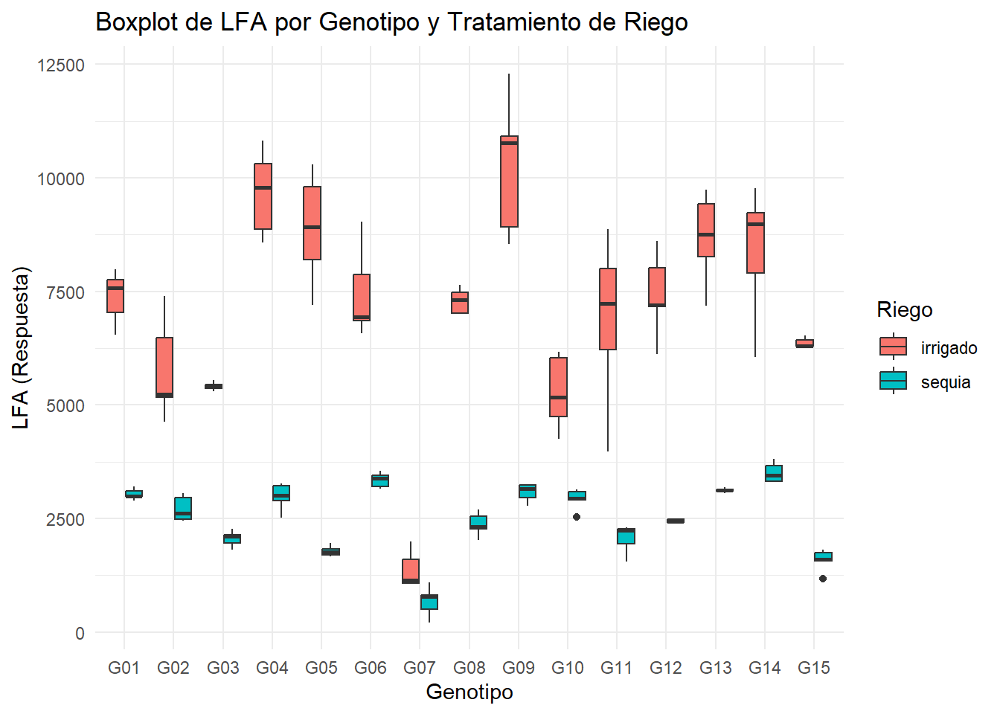

library(openxlsx)
data_de_tesis_prof <- openxlsx::read.xlsx("LA MOLINA 2014 POTATO WUE (FB).xlsx", sheet = "fb")Como usar quarto
1 Quarto
Quarto enables you to weave together content and executable code into a finished document. To learn more about Quarto see https://quarto.org.
1.1 Running Code
When you click the Render button a document will be generated that includes both content and the output of embedded code. You can embed code like this:
{r} 1 + 1
You can add options to executable code like this
{r} #| echo: false 2 * 2
The echo: false option disables the printing of code (only output is displayed).
2 como usar quarto?
2.1 fuentes
- negrita: esto es fuente negrita
- cursiva: solanum tuberosum
2.2 formulas matematicas
Area de una circunferencia \(Area_{circunferencia}=pi.r^2\)
esta es una formula cualquiera \[k=\frac{\left(2x-1\right)^2-1}{4}"\]
3 Mi primera pagina web
- Tener mi proyecto
- Conectar mi proyecto a GitHub
- Tener un archivo en formato html llamado ‘index.html’
- Hacer push al repositorio
- Activar GitHub Pages
4 Modelo lineal
4.1 Importar data xlsx
5 Leer el archivo de Excel y asignarlo a una variable
5.1 Modelo lineal
modelo <- lm(formula = lfa ~ bloque + geno + riego + riego*geno, data = data_de_tesis_prof)
anova(modelo)Analysis of Variance Table
Response: lfa
Df Sum Sq Mean Sq F value Pr(>F)
bloque 4 3435339 858835 1.5616 0.1892
geno 14 261729564 18694969 33.9922 <2e-16 ***
riego 1 788556926 788556926 1433.7957 <2e-16 ***
geno:riego 14 108147972 7724855 14.0457 <2e-16 ***
Residuals 116 63797516 549979
---
Signif. codes: 0 '***' 0.001 '**' 0.01 '*' 0.05 '.' 0.1 ' ' 15.2 Grafico en boxplot
#cargamos el paquete ggplot2
library(ggplot2)
# Crear un boxplot para visualizar los efectos de geno y riego
ggplot(data_de_tesis_prof, aes(x = factor(geno), y = lfa, fill = factor(riego))) +
geom_boxplot() +
labs(x = "Genotipo", y = "LFA (Respuesta)", fill = "Riego") +
theme_minimal() +
ggtitle("Boxplot de LFA por Genotipo y Tratamiento de Riego")
6 Comparacion de medias
library(agricolae)
# Si el ANOVA indica diferencias significativas, procedemos con la comparación de medias
# Comparación de medias con Tukey para el efecto de 'geno'
tukey_geno <- HSD.test(modelo, "geno", group = TRUE)
print(tukey_geno)$statistics
MSerror Df Mean CV MSD
549978.6 116 4806.708 15.42855 1149.464
$parameters
test name.t ntr StudentizedRange alpha
Tukey geno 15 4.901424 0.05
$means
lfa std r se Min Max Q25 Q50
G01 5208.740 2320.6396 10 234.5162 2900.00 7982.73 3024.7450 4871.780
G02 4248.306 1790.4189 10 234.5162 2449.59 7392.38 2705.6825 3847.175
G03 3737.911 1774.7220 10 234.5162 1811.97 5545.69 2117.7075 3790.125
G04 6323.822 3587.6820 10 234.5162 2511.13 10811.84 3062.3600 5916.390
G05 5331.217 3829.9284 10 234.5162 1657.64 10291.06 1784.2150 4586.715
G06 5401.719 2269.6009 10 234.5162 3159.54 9040.06 3398.7600 5063.420
G07 1027.445 508.7517 10 234.5162 216.31 1989.25 789.4375 1067.115
G08 4830.225 2602.1631 10 234.5162 2021.37 7643.80 2377.4100 4847.965
G09 6680.517 3942.2332 10 234.5162 2781.32 12296.22 3171.2750 5885.975
G10 4097.996 1361.9488 10 234.5162 2541.12 6164.24 2979.7125 3692.625
G11 4458.646 2830.2282 10 234.5162 1556.38 8867.09 2246.9750 3133.820
G12 4931.831 2694.8614 10 234.5162 2400.00 8603.78 2449.2350 4299.605
G13 5899.240 3000.7027 10 234.5162 3062.34 9743.70 3126.5475 5186.380
G14 5949.235 2751.9205 10 234.5162 3318.36 9776.01 3503.4825 4930.755
G15 3973.766 2529.1790 10 234.5162 1176.63 6522.46 1638.2950 4042.420
Q75
G01 7443.612
G02 5215.847
G03 5401.852
G04 9560.083
G05 8732.257
G06 6918.457
G07 1129.532
G08 7235.692
G09 10304.727
G10 5064.198
G11 6971.368
G12 7186.702
G13 8626.745
G14 8707.917
G15 6304.358
$comparison
NULL
$groups
lfa groups
G09 6680.517 a
G04 6323.822 ab
G14 5949.235 abc
G13 5899.240 abc
G06 5401.719 bcd
G05 5331.217 bcde
G01 5208.740 bcdef
G12 4931.831 cdefg
G08 4830.225 cdefgh
G11 4458.646 defgh
G02 4248.306 efgh
G10 4097.996 fgh
G15 3973.766 gh
G03 3737.911 h
G07 1027.445 i
attr(,"class")
[1] "group"# Comparación de medias con Tukey para el efecto de 'riego'
tukey_riego <- HSD.test(modelo, "riego", group = TRUE)
print(tukey_riego)$statistics
MSerror Df Mean CV MSD
549978.6 116 4806.708 15.42855 239.8611
$parameters
test name.t ntr StudentizedRange alpha
Tukey riego 2 2.801028 0.05
$means
lfa std r se Min Max Q25 Q50
irrigado 7099.533 2303.6007 75 85.63322 1065.26 12296.22 6080.475 7194.26
sequia 2513.883 774.8039 75 85.63322 216.31 3811.99 1994.430 2550.51
Q75
irrigado 8676.890
sequia 3128.035
$comparison
NULL
$groups
lfa groups
irrigado 7099.533 a
sequia 2513.883 b
attr(,"class")
[1] "group"# Comparación de medias con Tukey para la interacción 'riego:geno'
tukey_interaccion <- HSD.test(modelo, c ("riego", "geno"), group = TRUE)
print(tukey_interaccion)$statistics
MSerror Df Mean CV MSD
549978.6 116 4806.708 15.42855 1803.603
$parameters
test name.t ntr StudentizedRange alpha
Tukey riego:geno 30 5.438172 0.05
$means
lfa std r se Min Max Q25 Q50
irrigado:G01 7377.892 583.61443 5 331.656 6539.86 7982.73 7038.08 7578.79
irrigado:G02 5779.562 1127.71742 5 331.656 4631.00 7392.38 5162.74 5233.55
irrigado:G03 5416.770 89.80871 5 331.656 5305.77 5545.69 5369.88 5412.51
irrigado:G04 9668.932 945.94448 5 331.656 8569.08 10811.84 8867.03 9791.10
irrigado:G05 8878.756 1235.57574 5 331.656 7205.94 10291.06 8189.67 8913.12
irrigado:G06 7455.364 1009.33982 5 331.656 6576.65 9040.06 6857.13 6938.90
irrigado:G07 1374.156 411.10652 5 331.656 1065.26 1989.25 1068.97 1140.05
irrigado:G08 7286.826 282.80318 5 331.656 6998.00 7643.80 7012.74 7310.01
irrigado:G09 10287.712 1548.81007 5 331.656 8533.54 12296.22 8924.78 10764.71
irrigado:G10 5271.344 822.34789 5 331.656 4249.18 6164.24 4743.16 5171.21
irrigado:G11 6854.880 1888.72290 5 331.656 3966.33 8867.09 6210.41 7225.02
irrigado:G12 7417.258 946.24681 5 331.656 6111.43 8603.78 7164.03 7194.26
irrigado:G13 8672.380 1015.60193 5 331.656 7180.79 9743.70 8256.98 8750.00
irrigado:G14 8384.132 1473.21710 5 331.656 6049.52 9776.01 7895.00 8978.89
irrigado:G15 6367.026 107.45072 5 331.656 6270.00 6522.46 6302.79 6304.88
sequia:G01 3039.588 115.85242 5 331.656 2900.00 3203.70 2994.58 2999.66
sequia:G02 2717.050 281.05239 5 331.656 2449.59 3063.35 2487.28 2618.85
sequia:G03 2059.052 179.44660 5 331.656 1811.97 2274.48 1953.50 2107.76
sequia:G04 2978.712 302.61678 5 331.656 2511.13 3263.70 2889.83 3010.27
sequia:G05 1783.678 120.66794 5 331.656 1657.64 1967.49 1700.00 1771.80
sequia:G06 3348.074 165.94367 5 331.656 3159.54 3550.19 3198.96 3381.68
sequia:G07 680.734 335.90739 5 331.656 216.31 1097.98 495.83 782.10
sequia:G08 2373.624 260.99914 5 331.656 2021.37 2697.93 2278.60 2319.71
sequia:G09 3073.322 198.12400 5 331.656 2781.32 3238.41 2961.78 3150.00
sequia:G10 2924.648 235.40497 5 331.656 2541.12 3136.07 2909.10 2940.95
sequia:G11 2062.412 317.51100 5 331.656 1556.38 2301.31 1942.23 2237.88
sequia:G12 2446.404 37.06811 5 331.656 2400.00 2487.78 2425.26 2438.98
sequia:G13 3126.100 47.70803 5 331.656 3062.34 3191.97 3110.00 3120.00
sequia:G14 3514.338 217.30731 5 331.656 3318.36 3811.99 3326.93 3449.76
sequia:G15 1580.506 248.79682 5 331.656 1176.63 1814.84 1560.00 1601.06
Q75
irrigado:G01 7750.00
irrigado:G02 6478.14
irrigado:G03 5450.00
irrigado:G04 10305.61
irrigado:G05 9793.99
irrigado:G06 7864.08
irrigado:G07 1607.25
irrigado:G08 7469.58
irrigado:G09 10919.31
irrigado:G10 6028.93
irrigado:G11 8005.55
irrigado:G12 8012.79
irrigado:G13 9430.43
irrigado:G14 9221.24
irrigado:G15 6435.00
sequia:G01 3100.00
sequia:G02 2966.18
sequia:G03 2147.55
sequia:G04 3218.63
sequia:G05 1821.46
sequia:G06 3450.00
sequia:G07 811.45
sequia:G08 2550.51
sequia:G09 3235.10
sequia:G10 3096.00
sequia:G11 2274.26
sequia:G12 2480.00
sequia:G13 3146.19
sequia:G14 3664.65
sequia:G15 1750.00
$comparison
NULL
$groups
lfa groups
irrigado:G09 10287.712 a
irrigado:G04 9668.932 ab
irrigado:G05 8878.756 abc
irrigado:G13 8672.380 abc
irrigado:G14 8384.132 bcd
irrigado:G06 7455.364 cde
irrigado:G12 7417.258 cde
irrigado:G01 7377.892 cde
irrigado:G08 7286.826 cde
irrigado:G11 6854.880 def
irrigado:G15 6367.026 ef
irrigado:G02 5779.562 ef
irrigado:G03 5416.770 f
irrigado:G10 5271.344 fg
sequia:G14 3514.338 gh
sequia:G06 3348.074 hi
sequia:G13 3126.100 hij
sequia:G09 3073.322 hij
sequia:G01 3039.588 hij
sequia:G04 2978.712 hij
sequia:G10 2924.648 hij
sequia:G02 2717.050 hij
sequia:G12 2446.404 hijk
sequia:G08 2373.624 hijk
sequia:G11 2062.412 hijk
sequia:G03 2059.052 hijk
sequia:G05 1783.678 hijk
sequia:G15 1580.506 ijk
irrigado:G07 1374.156 jk
sequia:G07 680.734 k
attr(,"class")
[1] "group"